Leonardo Rodrigo Teixeira
Analista de TI
-

Sobre
Olá! Seja bem-vindo(a)!
Meu nome é Leonardo Rodrigo Teixeira, sou formado em
Técnico em Logística e Superior em Gestão da Produção Industrial e estou cursando Análise e Desenvolvimento de Sistemas.
Tenho mais de 5 anos de experiência na área de logística e mais de 5 anos na área da tecnologia.
Atualmente atuo como Analista de TI na DCBM Data Center, cuidando da TI de ponta a ponta:
servidores, rede, segurança, Microsoft 365, ERP, service desk e automação.
Minha origem é logística e produção industrial. Por isso olho para a TI como ferramenta de negócio:
encontrar o gargalo, medir e automatizar.
Minhas Responsabilidades:
Responsabilidades ERP TOTVS Protheus
• Configurador (SIGACFG): grupos, usuários, permissões e licenças.
• Administração do ambiente no TOTVS Cloud.
• Aplicação de patches e atualizações e replicação de bases.
• Agenda de implementações e ACT.
• Interface com o suporte TOTVS pela plataforma de tickets.
Outras Responsabilidades
• Infraestrutura e servidores (Windows Server, Active Directory, Hyper-V, Linux e nuvem).
• Firewall, redes e segurança da informação.
• Microsoft 365 (Entra ID, Intune e Teams).
• Service desk com GLPI.
• Monitoramento do ambiente (Zabbix e Grafana).
• Automação e dados (Python, Power BI e Power Platform).
• Gestão de budget, contratos e fornecedores de TI.
• Treinamento da equipe de suporte e dos usuários em segurança da informação e LGPD.
Sobre Mim:
Gosto muito de café, e meus principais hobbies são ir a academia, praticar Airsoft e ver séries.
Este é meu cartão profissional de DEV, todo esse site eu escrevi em linguagem HTML,
modifiquei o design em linguagem CSS e fiz as funções e animações com
JavaScript.
Espero continuar postando mais projetos para que vocês
possam ver minhas experiências na prática.
Muito obrigado pela sua atenção!
Atenciosamente,
Leonardo Teixeira
Meus projetos
Projetos profissionais
* Assistente de IA corporativo: assistente interno em produção, integrado aos dados do ERP,
com controle de acesso por área. Feito em Python.
* Pipeline de dados do ERP: extração do Protheus reescrita em Python,
com o tempo de processamento reduzido pela metade.
* GLPI 11: implementação do GLPI 11 em todos os departamentos, em Docker e Linux.
* Apps em Power Platform: aplicativos para campo, recebimento e RH, integrados ao Microsoft 365.
Projetos de estudo
* Portfólio: (É este que você visualiza agora nesta página).
* FlipBook: Este projeto é um catálogo digital em formato de Flipbook com responsividade para dispositivos moveis, desenvolvido em HTML, CSS e JavaScript.
* Gerador
de Etiquetas: Este projeto foi realizado através de uma
necessidade da empresa na qual estava trabalhando, Necessidade essa que era realizar a emissão
de etiquetas para identificação do estoque. Então fiz esse "programa" em linguagem .bat e com algumas macros e VBA
em excel. O que supriu a Necessidade.
* App
"Agenda de Tarefas":
Criado em aula de Flutterflow lecionado pelo professor Israel Henrique, através
do curso start-flow pela DATA7, esse app serve para organizar-se com sua
agenda colocando suas tarefas.
Nesta aula vimos como criar todo o app, e também configuramos uma base de dados do FireBase.